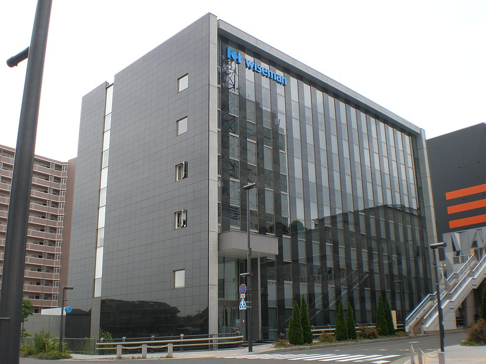

気になった企業
私が気になっている企業は岩手県盛岡市に本社を置き、 福祉および医療分野のソフトウェア開発・販売を主要事業とする企業である 株式会社ワイズマンです。
企業理念
価値あるものを創造することによりよりよい環境の実現と社会への貢献を目指す
| 価値あるもの | お客様にとって価値のあるもの |
|---|---|
| よりよい環境 | 社員にとって働く喜びのある職場 |
| 社会への貢献 | 価値あるものを創造することにより、お客様に満足・感動・喜びを提供 超高齢社会を支える企業として貢献 |
その他企業情報
| 本社郵便番号 | 020-0045 |
|---|---|
| 本社所在地 | 岩手県盛岡市盛岡駅西通2-11-1 |
| 本社電話番号 | 019-604-0747（人事課直通） |
| 設立 | 1983年（昭和58年）6月 |
| 資本金 | 1億円 |
| 従業員 | 538名(※2023年10月時点) |